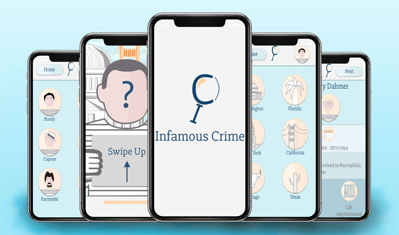
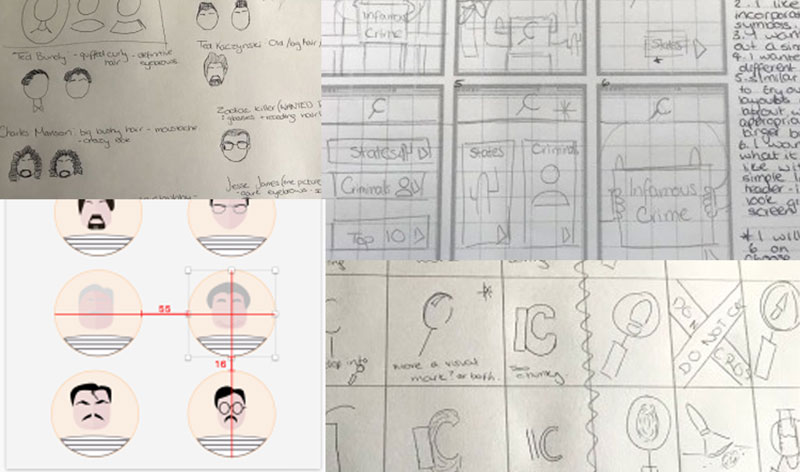
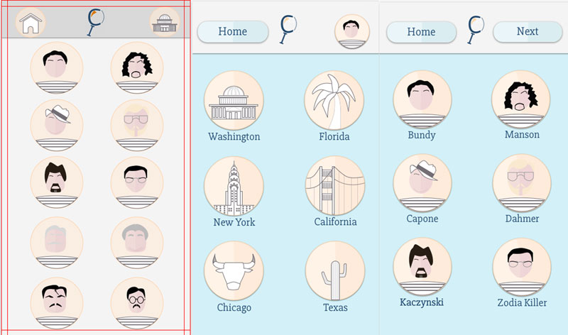

Infamous Crime Travel App
Photoshop/Sketch & Invision
UI & UX

The Process
I did extensive research into UX design and looked into button/icon sizes, placement and touch targets. I also refined simple icons of landmarks and simple featureless portraits focusing on criminals hair and identifying trademarks. I made a brand for the app as well as promotional posters and an active prototype on Invision.


The Final Product
I created a unique tourist app which could be used in America, for those who are interested in the criminal history of some of the most notorious serial criminals.